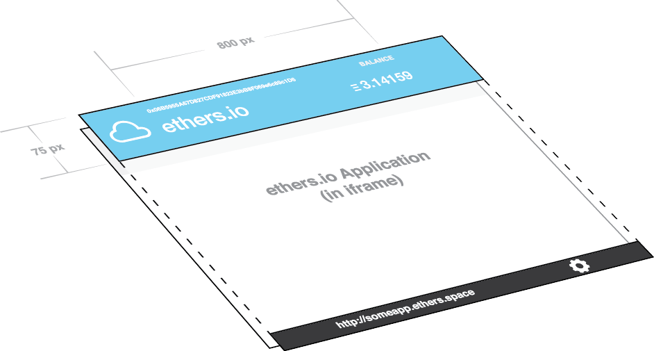

Overview¶
The ethers.io system works by creating an iframe within its user interface, which can host any web-compatible link (such as https), which can then communicate with the ethers.io container, which itself communicates with the Ethereum network.
This ensures that all applications are isolated in their own sandbox, protected by web browsers’ cross-origin security measures.
Design and Layout¶
Your application’s frame has its top 75px covered by the Wallet Interface, which is semi-transparent, so you should ensure that content does not appear above the 75px mark while ensuring backgrounds fill that space. No adjustment is required for the bottom status bar.
The wallet user interface is always 800px wide, and centered. Depending on your design, you may or may not wish to line your application up with this. You can use the following CSS and HTML to acheive this:
<html>
<head>
<style type="text/css">
.centerer {
margin-left: 50%;
}
.centered {
margin-left: -400px;
width: 800px;
}
</style>
</head>
<body>
<div class="centerer">
<div class="centered">
Your content here will be lined up with the wallet and status interface.
</div>
</div>
</body>
</html>
Large Numbers¶
Since ethereum deals a great deal with large numbers (far larger than JavaScript can handle losslessly), many calls require and return instances of BN.js, which can be accessed at ethers.utils.BN.
Some common things you will likely want to do with BN.js:
// Convert to base 10 number
var valueBase10 = value.toString(10);
// Convert from a base 10 string
var value = new ethers.utils.BN('1000000');
// Convert to hex string
var valueHexString = '0x' + value.toString(16);
// Convert from a hex string
var value = new ethers.utils.BN(valueHexString.substring(2), 16);
// Multiple two values
var product = value1.mul(value2)
// Convert from ether (string) to wei (BN)
var wei = ethers.parseEther('1.0');
// Convert from wei (BN or hex string) to ether (string)
var ether = ethers.formatEther(wei)
Serving Content¶
Content for ethers.io can be served using nearly any service or technology. All an application needs to do to be ethers.io ready is include the library at the end of its body:
<script type="text/javascript" src="https://ethers.io/ethers-v.0.1.min.js"></script>
To make life simpler, here are some quick options to host content
Hosted on ethers.space¶
A free space to host simple ethers.io applications. Use this app to manage an application.
Hosted on S3¶
A very affordable alternative, which allows for high volume traffic is hosting on Amazon Web Services.
Hosted on Heroku¶
Heroku has a free tier, which should suffice for most application, especially in the development stage. Heroku offers a simple way to include dynamic content in most of the popular languages (PHP, Python, Rails, node.js, et cetera).
Hosted on IPFS¶
IPFS is teh future of the web, and you can most certainly host your content here, however for now, urls must link to an IPFS gateway.
Application Links¶
And application’s link may be in the following forms:
- ethers.io/#/app-link/YOUR_URL
- ethers.io/#/app/APPMAP